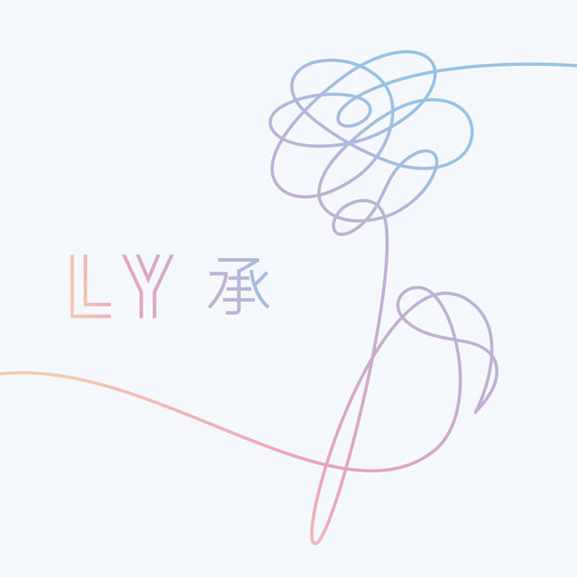

Un recorrido a través de la trilogía LOVE YOURSELF de BTS
La trilogía LOVE YOURSELF explora una idea que va cambiando a lo largo de tres álbumes: el amor puede comenzar dirigido hacia otra persona, convertirse en pérdida y conflicto, y finalmente llevar al descubrimiento de que el amor propio también forma parte de ese proceso.
Explora distintas etapas de la relación con el amor y con uno mismo. La historia comienza con LOVE YOURSELF 承 'Her', continúa con LOVE YOURSELF 轉 'Tear' y llega a su conclusión con LOVE YOURSELF 結 'Answer'. A lo largo, el amor pasa de estar dirigido hacia otra persona a convertirse en un proceso de pérdida, cuestionamiento, aceptación y, finalmente, amor propio.
El recorrido comienza mirando hacia afuera, atraviesa el momento en el que esa mirada se rompe y termina regresando hacia uno mismo.
TO LOVE → TO LOSE → TO FIND YOURSELF
LOVE YOURSELF 承 'Her'
El comienzo del amor

LOVE YOURSELF 承 'Her' representa la primera etapa del recorrido. El álbum presenta el amor desde el enamoramiento, la ilusión, la atracción y el deseo de conectar profundamente con otra persona.
Esta etapa muestra una visión luminosa del amor, pero también introduce una pregunta que se desarrollará a lo largo de la trilogía: qué sucede cuando la necesidad de ser amado comienza a influir en la manera en que nos vemos a nosotros mismos.
- Enamoramiento
- Ilusión
- Conexión
- Idealización
EL RECORRIDO
-
Intro: Serendipity El Encuentro
Representa el primer descubrimiento del amor.
La canción presenta el amor como un encuentro extraordinario entre dos personas. La conexión aparece como algo inesperado, pero profundamente significativo.
-
DNA La Conexión
La coincidencia se transforma en una conexión inevitable.
El amor se presenta como una conexión que parece estar profundamente ligada a quienes somos. La canción enfatiza la sensación de que ese encuentro estaba destinado a suceder.
-
Best of Me La Entrega
El enamoramiento se transforma en una entrega más profunda.
La relación comienza a implicar confianza y entrega emocional. Amar significa permitir que otra persona conozca y reciba una parte importante de nosotros.
-
Dimple La Atracción
Representa la fascinación por el otro.
La atracción se concentra en un pequeño detalle de la persona amada. Algo particular puede convertirse en aquello que hace que alguien resulte irresistible.
-
Pied Piper La Atracción
Muestra el poder que puede tener aquello que nos atrae.
La canción utiliza la figura del flautista de Hamelín para jugar con la idea de una atracción tan fuerte que resulta difícil resistirse a ella. También funciona como una referencia a la relación entre BTS y sus seguidores.
-
MIC Drop La Seguridad
Recuerda que la identidad del individuo existe más allá de la relación amorosa.
La canción cambia el tono romántico del álbum para presentar una actitud de seguridad y orgullo frente a quienes cuestionan el éxito de BTS.
-
Go Go La Espontaneidad
Representa el lado espontáneo de esta primera etapa.
Con una actitud despreocupada, la canción aborda el deseo de disfrutar el presente y actuar impulsivamente.
-
Outro: Her La Reflexión
Invita a mirar hacia atrás y reflexionar sobre lo vivido en esta etapa del amor.
La canción invita a mirar hacia atrás y reflexionar sobre lo vivido en esta etapa del amor.